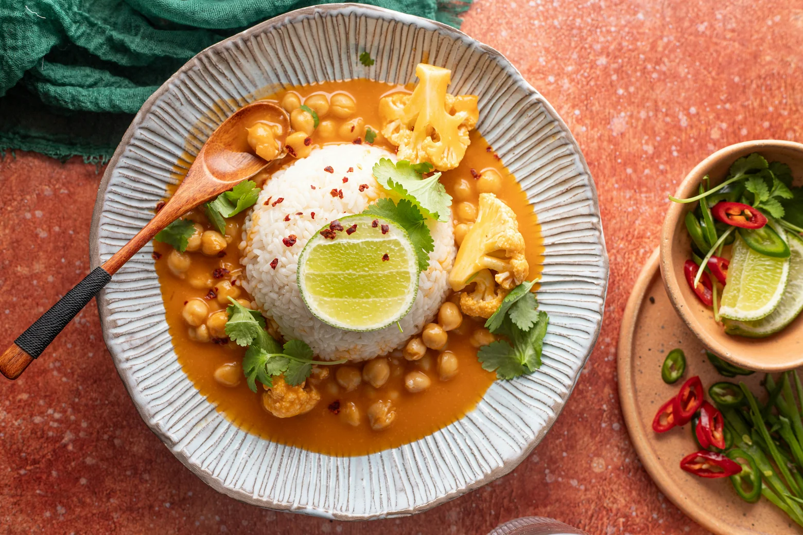
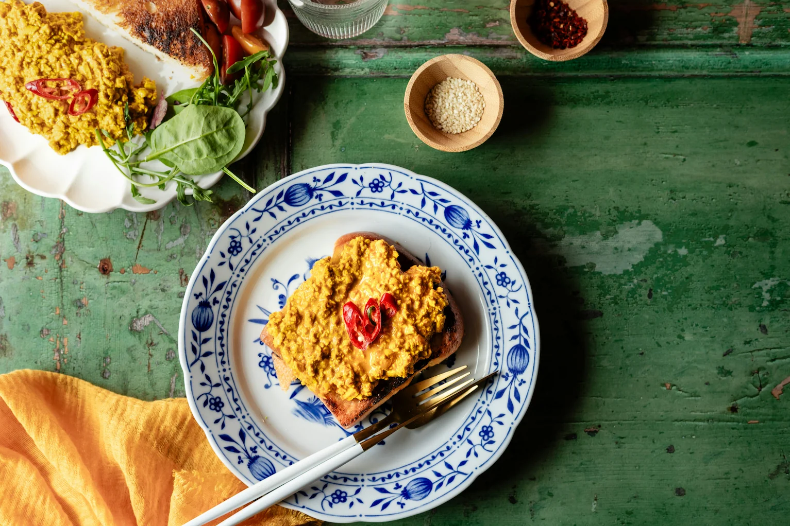

Bowls
Chickpea Curry Bowl
Coconut chickpeas, cauliflower, jasmine rice & fresh lime
Dublin's Plant Kitchen
Fresh plant-based ingredients, selected by us — delivered to your door with step-by-step recipes so you can cook like a chef at home.
01 — This week's recipes
Coconut chickpeas, cauliflower, jasmine rice & fresh lime

Crispy tofu, jasmine rice, katsu sauce, chilli & coriander

Silken tofu, turmeric, red chilli & sourdough toast
Our philosophy
01
Protein-first thinking
Every recipe is built around a plant protein — never an afterthought. Chickpeas, lentils, tofu: the stars of the plate.
02
Sourced with care
We select organic, locally sourced ingredients and deliver them pre-measured to your door.
03
Real flavour
Bold spices, fresh herbs, honest ingredients — because vegan food should be the most exciting thing on the table.
Our story
We believe the best meals are the ones you cook yourself. That's why we select the finest organic, locally sourced plant-based ingredients and pair them with foolproof step-by-step recipes.
No subscriptions, no commitments. Just great ingredients, great recipes, and the satisfaction of cooking something extraordinary at home.
Read our story →02 — From the kitchen
Chickpeas, lentils, tofu — the science behind why they keep you full and energised all day.
Read more →The secret is in the spice ratio — and a really hot pan. Our chef shares the full method.
Read more →A guide to the best plant-based food in the city, from us to you. Updated for 2026.
Read more →